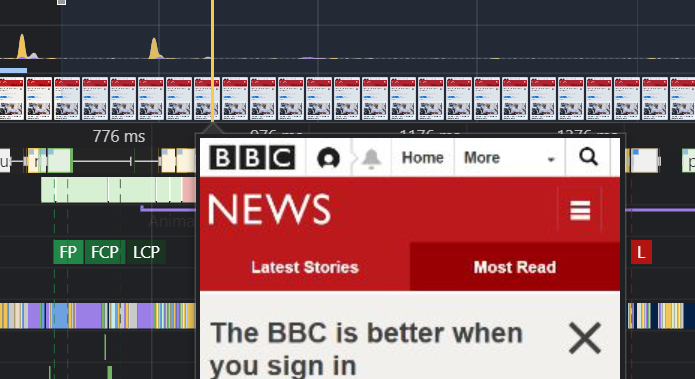
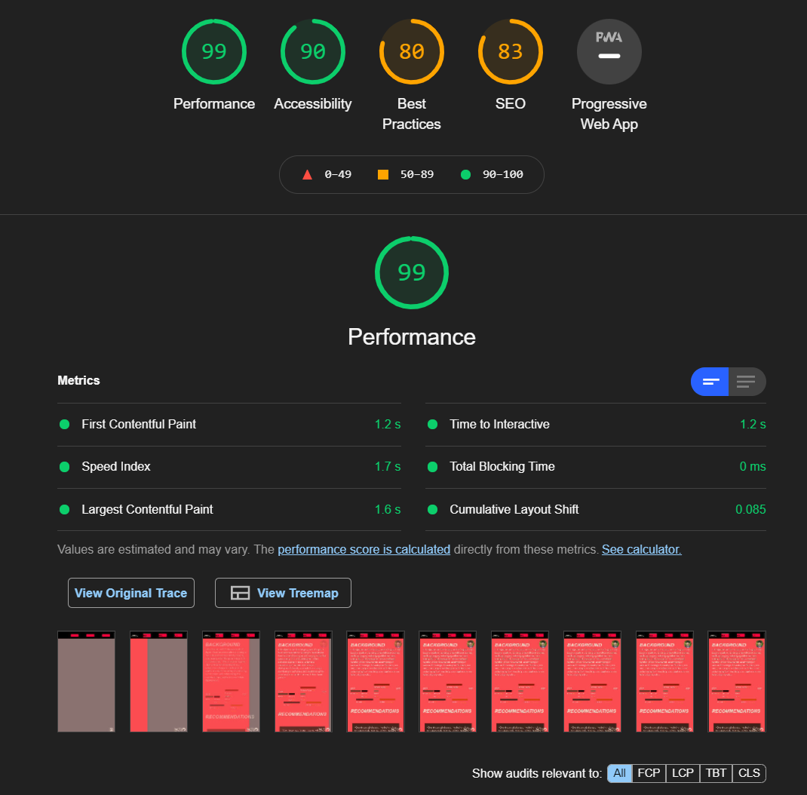

Design
Trying to find a different way to present my portfolio pages, I took inspiration from an unlikely place: the Chrome DevTools Performance tab. I thought it would be interesting to try integrate this in some way, which ended up being in the nav bar.
I had also wanted to use this opportunity of a portfolio site to experiment with page transitions, that I do not typically get to do with client projects. I am very pleased with how the transitions turned out, and how smoothly they work.
A key UX consideration I had to make with my unusual nav bar was to allow mobile and tablet users to be able to just click on a button, without having to move the yellow stylus -- otherwise it would have been a nightmare to navigate.
Development
As there were a lot of elements to track with JavaScript, it was vital for me to use functional programming to keep my logic modular, and avoid repetition. I ended up using much less lines of code than I otherwise would have. Being a small site, this is not as big a problem, but I still wanted to be resourceful.
For the CSS, I used the GPS naming convention as it encourages using CSS in a cascading manner. As I had been using cascading style rules from the beginning, I found it much easier to pick-up GPS and begin developing fluidly. Having used this for both client and personal projects, I have spent a slither of time debugging CSS issues, with a much smaller CSS bundle size. Using this convention forced me to consider the design architecture of the site I am building far more, so that I can easily maintain the styles in the future. There were far less instances of breaking styles altogether because of specificity issues deriving from using classes for everything.
